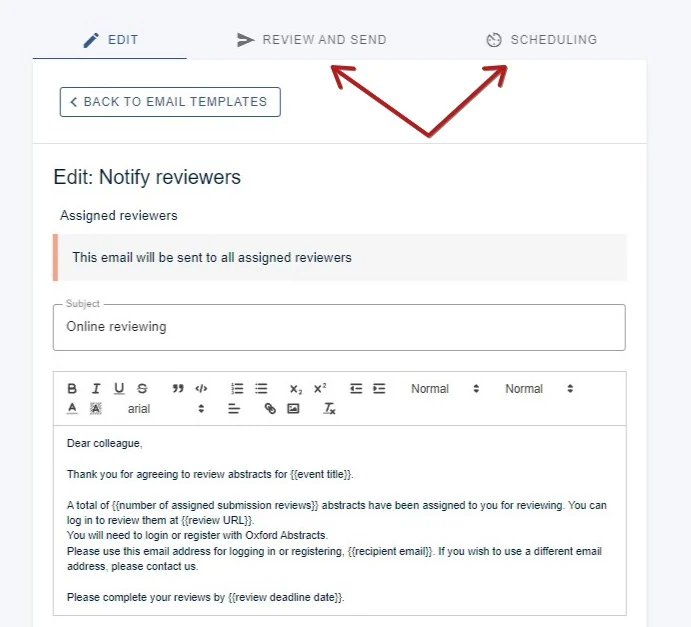
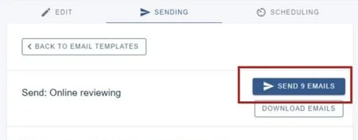

Notifying reviewers that they have been assigned submissions to review
For event organisersNot an organiser?
After adding reviewers and assigning submissions to them, you will need to notify them via the notifying reviewers email template.#
NB: Emails to reviewers are NOT SENT AUTOMATICALLY. They will need to be sent manually - in bulk or individually.
For guidance on creating and sending emails, see Amending template emails
Go to Event dashboard → Emails → Edit and Send → Abstract Management**
Scroll down to Review Emails under Manual sent emails and click on Notify Reviewers.
Check the body of the message and make any changes you wish. All changes will be saved automatically. When you are ready to send the email, click Review and send or Scheduling, if you would like to send the email automatically at a set time.

You will be prompted as to how many emails you will be sending.
You can then click SEND ... EMAILS when you are ready.

For more guidance on sending and scheduling emails, please see:

Did this page solve it?
Thanks — this helps us fix it.
Didn't solve it? Ask our support team
No question is too small, and there's no charge for asking. Raise a ticket and someone who knows the software will pick it up.